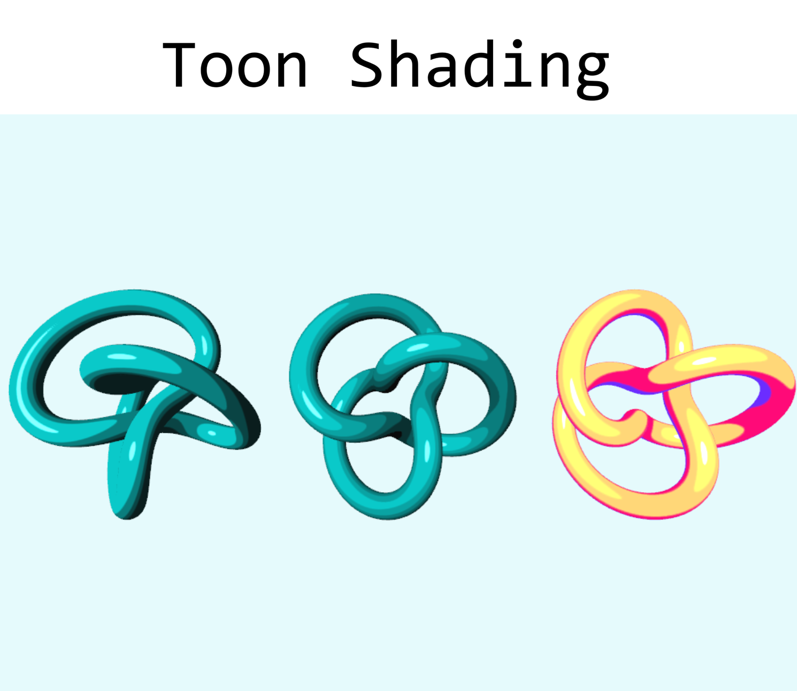

3D Graphics

Toon Shading is the fourth assignment in CS250 Computer Graphics II at DigiPen Institute of Technology. The goal was to build a non-photorealistic, cel-shaded look on top of a standard Phong lighting model by quantizing lighting intensity into discrete bands. Three different discretization techniques were implemented and made switchable at runtime, each with optional anti-aliasing along the band edges. A procedurally generated trefoil knot was added as an additional test shape alongside the existing primitives.
Determining the correct convention for the light direction vector was non-obvious — an inverted convention made every shape render almost completely black, since the lighting term was effectively pointing away from the surfaces being lit.
Matching each discretization style to its reference algorithm precisely was tricky: small differences in band-boundary mapping or rounding direction produce banding that looks plausible but is subtly off, and each style needed its own anti-aliasing strategy.
Cross-referenced how the existing debug UI displayed and negated the light direction to determine the correct sign convention, then adjusted the lighting calculation to match.
Reworked each shading style against the documented reference pseudocode, including separate boundary-blending logic for diffuse bands and a separate threshold-based anti-aliasing pass for specular highlights.
A lighting bug that makes an entire scene look broken can come down to a single inverted direction vector — checking the sign convention against existing reference code first saves a lot of trial-and-error debugging.
Anti-aliasing for stylized shading is not one universal trick; each discretization method needs a blending strategy tailored to how its bands are computed.